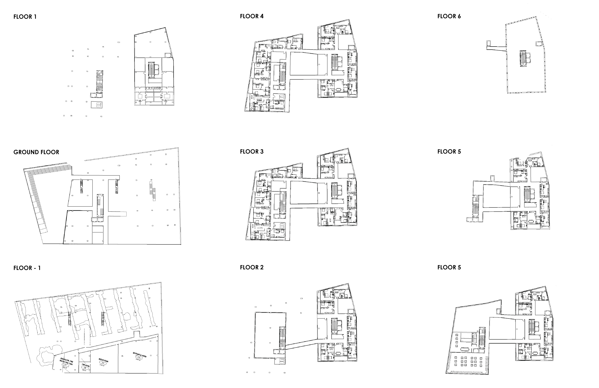
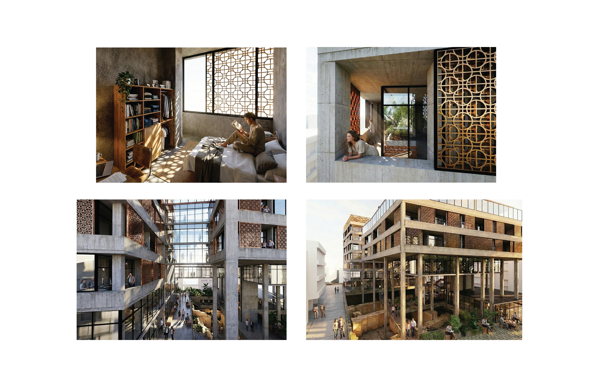
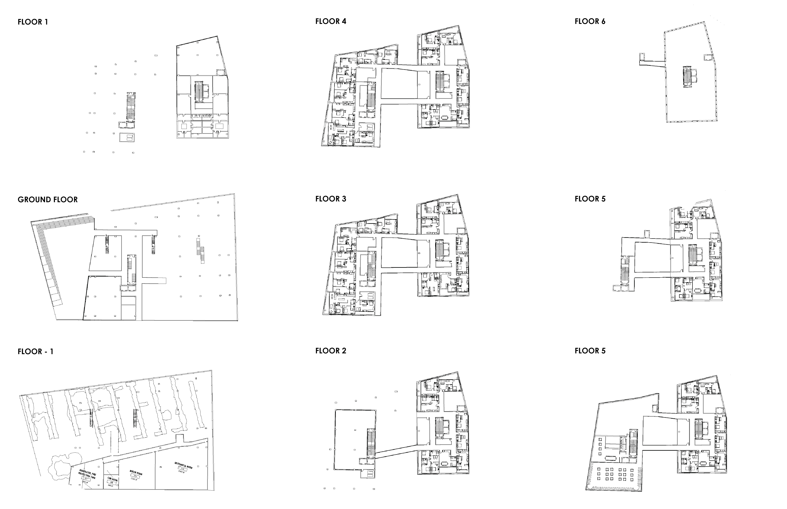
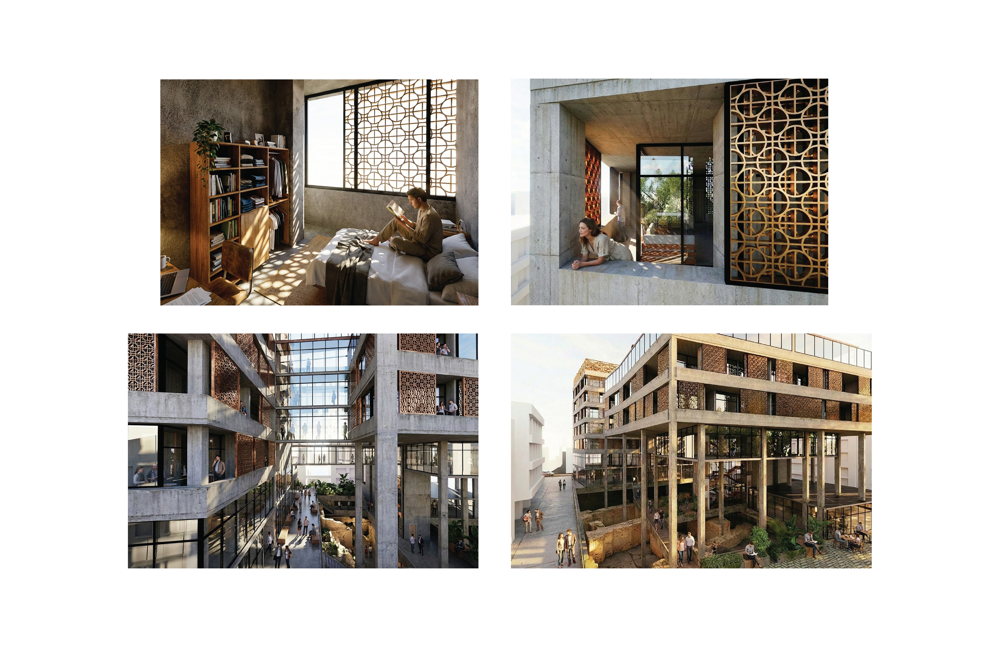

Project Two
Problem: Lack of multi-use urban buildings that adapt to the local climate through passive design implementations while allowing for user control.
Solution: Terracotta facade panel system that is operable by users to change the feeling of the individual apartments, inevitably creating a moving facade throughout the day.
 


